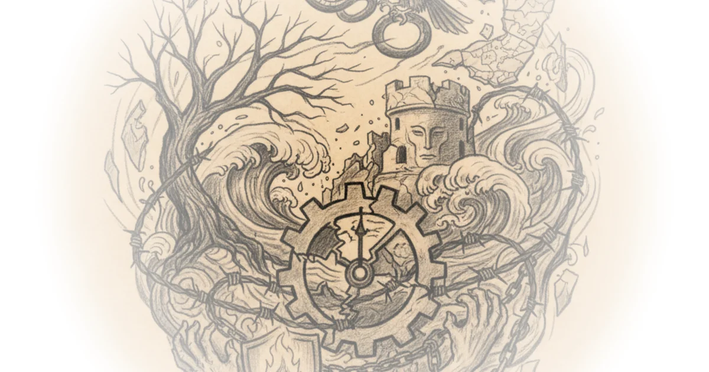

Tim Mak's latest report for The Counteroffensive cuts through the geopolitical chessboard to reveal a far more devastating reality: the war in Ukraine is not merely a clash of armies, but a fracture of the family unit that will make any negotiated peace agonizingly difficult. While much of the world focuses on troop movements or diplomatic maneuvering, Mak argues that the true barrier to ending this conflict lies in the deep, personal betrayals that have turned brothers against brothers and fathers against sons. This is a story about why the war won't end anytime soon, not because of strategic stalemates, but because the human cost has calcified into a hatred that no treaty can dissolve.
The Microcosm of Betrayal
Mak anchors his entire argument in the tragic story of Artur Asadov, a Ukrainian soldier whose father, Oleg, fought on the opposing Russian side. This is not an isolated anomaly but a reflection of a broader societal wound. "Their story is a microcosm of the splits that have occurred all across families broken apart due to this war," Mak writes, illustrating how the conflict has infiltrated the most intimate spaces of private life. The author details how Artur, a former filmmaker, changed his surname to distance himself from his father, a man who had become a commander for Russia-backed forces. This personal detail underscores a profound truth: the war has forced Ukrainians to redefine their very identities in opposition to their own blood.

The emotional weight of this division is captured in a chilling exchange between the estranged father and son. When the invasion began, Oleg predicted Kyiv would fall in three days. Artur, refusing to hide, replied, "I don't want to hide… I will be ashamed. It's my city and my country… to escape it is the easiest thing to do." Mak uses this text message to highlight the moral clarity that drove Artur to the front lines, even as it drove a wedge between him and his family. The author notes that Artur's sister, Daniella, viewed her father not just as a political opponent, but as a traitor who "cheated on my family, and in a couple of years, cheated on Ukraine."
"It was a whole mountain of flowers," Artur's wife recalled, describing the funeral of a man who died saving four fellow soldiers, yet whose death left his family in a grief that transcends national borders.
The Failure of Detached Diplomacy
The piece pivots to a sharp critique of the current diplomatic landscape, specifically targeting the approach taken by the Trump administration. Mak argues that the administration's strategy has been characterized by a dangerous lack of understanding regarding the depth of animosity between the two nations. "The American government – led by diplomatic newbie and real estate developer Steve Witkoff – has shown almost no understanding of the details," Mak writes. He contends that this approach, which vacillates between Russian talking points and hollow gestures toward Ukraine, ignores the fundamental reality that 43 percent of Ukrainians have relatives in Russia.
This statistical reality, drawn from a 2021 survey by the Kyiv International Institute of Sociology, is central to Mak's thesis. He suggests that any peace deal that fails to account for the fact that many families now view their relatives as "brainwashed strangers" is doomed to fail. The author draws a parallel to the Battle of Kyiv in 2022, where the rapid repulsion of Russian forces shattered the illusion of a quick victory, much like the rapid escalation of hatred within families shattered the hope of a quick reconciliation. "Any diplomacy that lacks an understanding of the deep betrayal felt within families will be doomed to fail," Mak asserts, a point that resonates deeply given the historical context of the Donbas conflict, where similar family splits began a decade ago.
Critics might argue that focusing on family dynamics distracts from the hard power realities of military logistics and international aid, which are often the primary drivers of negotiation outcomes. However, Mak's evidence suggests that without addressing the human trauma, any ceasefire will be merely a pause in violence rather than a true peace. The administration's failure to grasp this nuance, according to Mak, is a critical blind spot that could prolong the conflict indefinitely.
The Long Shadow of Trauma
The narrative concludes with a sobering reflection on the future of the region. Artur was killed on April 9, 2023, in the very region where his father was fighting, an event that sealed the family's tragedy. His mother, Natalia, still visits his grave and screams in grief, unable to accept the loss. Mak uses this imagery to drive home his final point: the war has created a trauma that spreads "like a disease from village to village." He writes, "Putin's army has committed too many crimes, imposed too much suffering, for there to be understanding between the two sides."
The author suggests that the expectation of a quick reconciliation, held by many at the start of the 2022 invasion, has been replaced by the grim realization that Ukraine and Russia will be on the verge of war for a generation. The personal stories of Artur and his family serve as a stark reminder that peace is not just the cessation of violence, but the dropping of enmity—a feat that no diplomat can mandate. "It's forgiveness. And no diplomat or president can mandate that," Mak concludes, leaving the reader with the heavy realization that the path to peace is paved with wounds that may never fully heal.
Bottom Line
Tim Mak's most powerful contribution here is the reframing of the war's duration from a strategic puzzle to a human tragedy; the strongest part of his argument is the irrefutable evidence that personal betrayal has made political compromise nearly impossible. The piece's vulnerability lies in its heavy reliance on a single family's narrative, which, while poignant, may not fully capture the diverse experiences of the entire population, yet it effectively illustrates the depth of the divide. Readers should watch for how future diplomatic efforts address—or ignore—these deep-seated familial fractures, as they will likely determine whether any peace deal holds or crumbles.